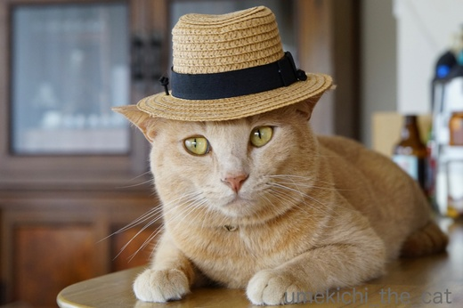
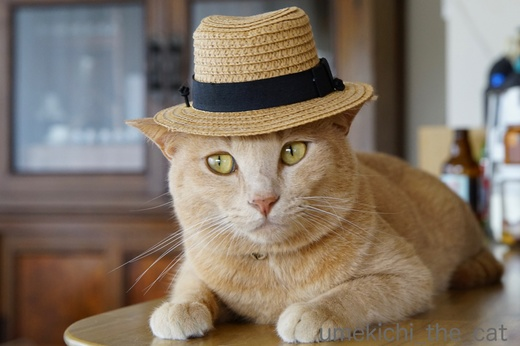

良いニュース悪いニュース、最近の採用不採用 [梅吉]
梅吉さんは良いニュースと悪いニュースどちらから聞きたいですか？

![[猫]](https://blog.ss-blog.jp/_images_e/101.gif) わしは だんぜん わるいにゅーすからやな
わしは だんぜん わるいにゅーすからやな

梅吉さんが素敵なお帽子をかぶったこの写真なんですが
アイリスペットどっとコムのCOOLにゃんこフォトコンテスト2017に応募していたんですよ。
でも残念ながら落選ですって連絡が来ちゃいました。
「帽子をかぶって涼しげに。熱中症予防にも効果的やで！」ってコメントをつけて
入選する気満々だったんだけどなー。
サイクロンスティッククリーナーの置き場所も決まっていたのに。
じゃあ、良いニュースをね。


この３枚は猫めくりに応募していたんだけど採用ですって連絡が来ましたよ。
ただねとってもシンプルな採用連絡メールでどの写真が採用されたのかわからないの・・・・・
日めくりカレンダーが手元に届いてからのお楽しみって事なのかな。
採用＆不採用、にゃん生の悲喜に思いを馳せて夕日を見ながらたそがれる梅吉さん(*>艸<)
来年のカレンダー１つ確保できました![[手（チョキ）]](https://blog.ss-blog.jp/_images_e/87.gif)
にゃんせい いろいろあんねんなー！
ちなみに私も絶対に悪いニュースから聞きたい派です。
 ↑ガブッと一押し↑
↑ガブッと一押し↑
サマートリュフなるものをパスタでいただいて来ました。
香りがぐんと良くなるウィンタートリュフよりもお手頃な価格で手に入るらしいので
割とふんだんにかかっていました。
お味ですか？う〜〜ん、まいたけの方が美味しいと思うww
松茸にもあまり思い入れがありません。
トリュフも松茸も本当に美味しいの食べた事ないからだーって言われそうですね^^;
ワインは美味しゅうございました。
〜追記〜
くるねこさんのところのトメちゃが逝ってしまいましたね。
トメちゃファンでした。残念。。。


梅吉さんが素敵なお帽子をかぶったこの写真なんですが
アイリスペットどっとコムのCOOLにゃんこフォトコンテスト2017に応募していたんですよ。
でも残念ながら落選ですって連絡が来ちゃいました。
「帽子をかぶって涼しげに。熱中症予防にも効果的やで！」ってコメントをつけて
入選する気満々だったんだけどなー。
サイクロンスティッククリーナーの置き場所も決まっていたのに。
じゃあ、良いニュースをね。


この３枚は猫めくりに応募していたんだけど採用ですって連絡が来ましたよ。
ただねとってもシンプルな採用連絡メールでどの写真が採用されたのかわからないの・・・・・
日めくりカレンダーが手元に届いてからのお楽しみって事なのかな。
採用＆不採用、にゃん生の悲喜に思いを馳せて夕日を見ながらたそがれる梅吉さん(*>艸<)
来年のカレンダー１つ確保できました
ちなみに私も絶対に悪いニュースから聞きたい派です。
サマートリュフなるものをパスタでいただいて来ました。
香りがぐんと良くなるウィンタートリュフよりもお手頃な価格で手に入るらしいので
割とふんだんにかかっていました。
お味ですか？う〜〜ん、まいたけの方が美味しいと思うww
松茸にもあまり思い入れがありません。
トリュフも松茸も本当に美味しいの食べた事ないからだーって言われそうですね^^;
ワインは美味しゅうございました。
〜追記〜
くるねこさんのところのトメちゃが逝ってしまいましたね。
トメちゃファンでした。残念。。。

カフェオレ色の梅吉

梅吉 2023年8月10日 永眠


梅吉と出会った譲渡会

犬猫の理由なき殺処分ゼロ
妄想広告
UMEKICHI 光

爆発的に早い！
時々攻撃的！
Thanks to Mr.Boss365
爆発的に早い！
時々攻撃的！
Thanks to Mr.Boss365

この帽子は梅吉さんにすごく似合ってて、みんなの評判も良かったのに、何故選ばれないんだろー??(大したことない写真も選ばれてるみたいなのに)下の3枚私はてへって感じで笑ってる写真が特に好き~。でも選ぶ方は他の写真とのバランスとか、別の基準があるのかな。猫めくりは毎年買ってるカレンダーなので、来年は梅吉さんが出て来ると思うと、今から楽しみです。
by zombiekong (2017-08-25 19:42)
おお～おめでとうございます。ひとつでも良いことあれはすべてが良いことってことですよ！
by みぃにゃん (2017-08-25 20:08)
麦わら帽子の涼し気な梅吉さんですねぇ～！
落選ですか・・・とっても可愛いのに！！
でも猫めくりカレンダーには採用♪
嬉しいですね(*^_^*)
by きぃ (2017-08-25 20:13)
梅吉さん
ストローハットがお洒落ですね(^^)
by ma2ma2 (2017-08-25 20:26)
寅さん帽の梅吉さん写真、秀逸なのにな～残念！
猫めくりカレンダー、どれだろう～？？やっぱり1枚目のてへっかな(*^▽^*)
トリュフ、マツタケよりも、しめじ、舞茸の方が好き、なんて安上がりな私♪
顔が入ってしまいそうな大きなワイングラスおしゃれです^^
by ゆきち (2017-08-25 20:50)
帽子の写真は強烈に覚えてます。なので残念です。
でも、猫めくりの方、おめでとうございます(^^♪
食べた事のない食材です。美味しそうです。
もうすぐ、松茸の季節なんですね(^^♪
by riverwalk (2017-08-25 21:32)
猫めくりのご入選おめでとうございます。^^)
帽子をかぶった梅吉さん、良いのになあ。
by yes_hama (2017-08-25 21:54)
梅吉さんすごい～＾＾
帽子をかぶった写真は、完璧にトラさんで、
いい味出してるのにな～。
by マーヤ (2017-08-26 00:35)
日めくり採用おめでとうございます。
わたしの勘ですが目を閉じて「テヘッ」としてるポーズが採用と予想。
by 響 (2017-08-26 02:40)
日めくり採用おめでとうございます♪
私もアイシアさんのフォトコンに応募してまして
採用されればカレンダー確保＾＾
by ぽちの輔 (2017-08-26 07:03)
フーテン帽の梅吉さん写真、いいのにね〜 残念でした。。
でも、日めくりカレンダー当選、ばんざ〜い♡
まん中の、ハンター写真ちゃう？ だって、目、寄ってますもん♪
by のらん (2017-08-26 07:53)
採用おめでとうございます〜！
ちぃさんステージママなんだからぁ〜(=^▽^)σ
王子は若かりし頃、アイリスの今週のベストショットに選ばれたことがありますぅぅ٩( ᐛ )وでへ (ここにもステージ下僕が…)
by も〜 (2017-08-26 15:36)
フォトコン。帽子とっても似合ってたのにね。
梅吉くんは気にもしてない様子(^-^)次、頑張ろうね。
猫めくりカレンダーは採用？おめでと～。やったね♪
猫好きなのに、カレンダーを飾らないので買ったことがなかった私。
梅吉くんが載っているのならこの機会を逃しちゃいけないよね。
絶対にゲットするから～。
知っている猫ちゃん・・・。
自分の方が勝手に知っているだけだとしてもお別れは寂しくて涙が出て。
飼い主様の気持ちを思うと辛くなります。
私もそんな存在のにゃんこやわんこがたくさん！！
どの子たちにも元気でいてもらいたいです。梅吉くんもだよっ(^-^)
by emi (2017-08-26 16:03)
帽子をかぶった梅吉さんは、残念ながらきっとダンディー過ぎちゃったんですね(⌒-⌒; )
でも猫めくりに採用されたってことはイケメンモデルさんってことが
全国のニャンコ好きにばれちゃうってことで・・・ますますファンが増えちゃいますねぇ♪( ´▽｀)
猫めくりカレンダー、GETしなくては=(^.^)=
by ニッキー (2017-08-26 22:30)
梅吉さん、スリムでかっこいいモデルさんですね☆
帽子、すっごく似合ってる！
笑顔のは和みますね～他の写真も素敵ですよ～＾＾
トリュフ、香りがいいような気もするけど、そこまで美味しいものなのかどうかは‥でもきっと、最高のは食べたことがないからですね、そもそも＾＾；
by sana (2017-08-26 23:50)
採用おめでとうございます。ヽ(^。^)ノ。。楽しみですね。(*^^)v
by 水郷楽人 (2017-08-27 06:46)
おめでとうございます(^_^)v
さっすが梅吉さんですね～。
帽子もとっても似合って素敵ですよ(^_^)
by kou (2017-08-27 15:08)
私も断然、悪いニュースから聞きたい派！
ご飯も、美味しいものは最後に残したいっ！！
最後は、にっこりで次に繋げたいですもんね～。
そして、アイリスの梅吉さん、ダンディーやでぇ（←この言い方で合ってるかしら・汗 by.東北生まれ）
そう、トメちゃん。悲しかったです。。。
私も、ぼんあにぃ＆トメちゃコンビが大好きで、
一時トメちゃんが回復したときは目頭が熱くなりました。
えらかったですねぇ。。
by morichan (2017-08-28 12:05)
わたしも悪いニュースから聞きたいかな^^
梅吉君、採用おめでとう！！
帽子でクールに決めた写真も良かったのにね～～～
うち、今回はどれも不採用っぽいです。
来年また頑張ろうー^ω^
by リュカ (2017-08-28 12:54)
zombiekongさん＞猫めくりの愛用者でいらっしゃいましたか＾＾
梅吉のどの写真が何月何日に採用されているのか私も今から楽しみでーす。
採用されやすい写真っていうのは確かにありますよね。
今回は私の気に入っている写真で攻めて見ましたよ( ^ω^ ）
みぃにゃんさん＞なんて前向きな捉え方！
カレンダー１つ確保でよかったです＾＾
きぃさん＞猫めくりカレンダー、スボラな私なので毎日めくれるか・・・(⌒_⌒;
梅吉の日までは確実にめくりそうですがその後どうなるかわかりません！
梅吉で日付が止まってしまうかも(*>艸<)
ma2ma2さん＞この帽子偶然見つけたのですが涼しげで良いでしょう〜＾＾
おっとと男同士おそろでもあるんですよ！
ゆきちさん＞おお〜！私と同じしめじ、舞茸派ですね＾＾
安くて美味しいにかなうものはありませんよね〜。
梅吉の寅さん写真は性懲りも無くまたどこかに応募しようと思っています(^_－)☆
riverwalkさん＞猫めくりの当選嬉しかったですよ＾＾
どこにかけようとか今から思案中です。
関西ではもう「まったけ」が出回っています。
八百屋さんに行くとあの独特な香りがぷ〜んと漂ってきます。
並んでいるのは中国産ばかりですが^^;
りっぱな国産はデパートに行かないとお目にかかれません。
yes_hamaさん＞帽子写真、今度は他所に売り込もうと張り切っております(*>艸<)
マーヤさん＞そうなんですよ〜。
帽子写真はみなさんに寅さん写真とご好評をいただきました＾＾
本にゃんはボギーやカポネを目指していたみたいなんですけど(*>艸<)
響さん＞今のところ「テヘッ」の評価が高い様です＾＾
笑っていてほのぼのしちゃいますよね！
本にゃんぜんぜんほのぼのキャラじゃないんですが(^▽^;)
ぽちの輔さん＞あ、私も２個目のカレンダーはアイシアを狙っています＾＾
みんにゃ一緒に採用してもらえると嬉しいですよね〜。
のらんさん＞密かに私も「ハンター写真」じゃないかと思っています。
たぶん他にこんな顔した写真応募されてないと思うのー！
異色、という点で採用！！
も〜さん＞それそれ！！「わたしってなんかだよな〜」と思ってたのですが
ステージママですよねＯ(≧▽≦)Ｏ
もう、りえママ（古っ）みたいにどんどん、ぐいぐい売り込みますよ(^_－)☆
王子がベストショットに！
梅吉はイロモノ勝負なのですが (^▽^;)王子は正統派かわいいお写真ですね！
emiさん＞梅吉は前向きな漢なので「べつのにおうぼしてや」とのことでした＾＾
カレンダーはアイシアさんのがソネブロにゃんこてんこ盛りになりそうな
予感ですよ〜。
ブログで知っているにゃんこ、わんこ・・・
動物ブログを5年、10年と続けていらっしゃるブロガーさんの読者になっていると
どうしても「お別れ」を知ることになりますよね・・・・・
その子が逝ってしまった悲しみと、うちの子がと考えるとまた新たな悲しみが。
emiさん家のみなにゃん、ひなちゃんまりもちゃんもず〜〜〜〜っと元気で！！
ニッキーさん＞ダンディー梅吉は別所に再投稿しようかと目論んでおりますよ〜＾＾
カレンダーはアイシアさんのが知っているにゃんこさんが
てんこ盛りになりそうな予感ですよ〜。そちらも是非是非！！
sanaさん＞帽子似合っていますか？ありがとうございます！！
寅さん！とお呼びくださいませ(*>艸<)
トリュフ、私も味も香りも「・・・・・」です(⌒_⌒;
きっと最高の物を食べる機会があったとしても（ないけど）
「最高って言っているから美味しいって言わなきゃ！！」という
義務感しか湧いてこない様な気がしてなりませんww
水郷楽人さん＞ありがとうございます！！
どの写真が採用されているのかどきどき！ワクワク！！感が＾＾
あえて採用写真を連絡してこなかったのはそれが狙いだったりして〜ww
kouさん＞なんと！！採用されました〜＾＾
カレンダー送られてくるのが楽しみです。
帽子はおっととお揃いなんですよww
morichanさん＞私も美味しいものは最後に、です。
終わりよければ全て良し！ですよね〜＾＾
「ダンティーやでぇ」の「ぇ」が◎ですよ〜(*>艸<)
って私もエセ関西弁。札幌生まれですから！！
飼い猫や犬が一時持ち直して元気に見える時があるのは（人間もありますよね）
飼い主さんに死を受け入れる心の準備をしてもらう
猶予期間だって聞いたことがあります。
サッカーでいうアディショナルタイムみたいなもの。
その期間が長いか短いかは神のみぞ知る・・・・と。
くるねこさんも「トメちゃが準備期間をくれた」と書かれていましたよね。。
それにしても切ないです。
リュカさん＞なんと〜！カレンダー初採用でした＾＾
帽子写真はまた別なところに売り込みますよーww
いつかあおうみ２にゃんさんと同じものに採用されるとうれしいな〜。
by ちぃ (2017-08-28 15:22)
ボルサリーノ、めっちゃかっこいいけどね！額縁に入れたいくらい。
キャメラ（！）を気にしない、フリーダムな表情が最高なの♪
by Ginger (2017-08-29 18:53)